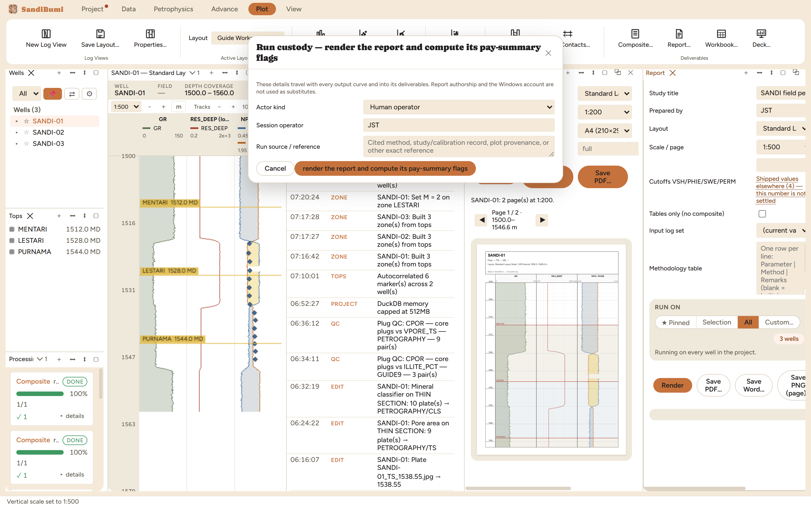

The Report pane (Plot ▸ Report…) assembles the
study document: cover, an editable methodology table, the zone
parameters, the pay summary, and the composite log pages, in one PDF.
Around it sit the other deliverable renderings of the same decisions:
Save Word… for the editable twin,
Workbook… for the Excel version, and Deck…
for the asset-team slides. Reach for it at the end of an interpretation pass,
and for the Batch button when every well needs its own document.
The pane

Pressing Render opens run custody, and the prompt's own
title says why: rendering a report is not a passive export. Its
pay-summary pass computes the flag curves, so the run records who
stood behind it and on what source.
The cutoffs row is deliberately unsettled. Each of the four
cutoff fields (VSH/PHIE/SWE/PERM) carries a chip instead of a quiet
default:
Shipped values elsewhere (4) — this number is not settled
The chip lists candidate values shipped in other tools and says
plainly that the number is a decision rather than a constant. A
report whose cutoffs were never chosen should look unfinished, and
it does.
The methodology table is yours. One row per line (Parameter |
Method | Remarks), blank for the built-in template; it persists as a
project document, so the next report starts from the last one's
wording.
Input log set and scope choose which interpretation and which
wells: the RUN ON pill runs the pinned well, the selection, all
wells, or a custom list; Batch renders one file per well, as PDF or
Word.
Step by step
Open Plot ▸ Report…; set the study title and
author, pick the layout and scale for the composite pages, and settle
the cutoffs, since the chips show what other tools shipped and the
number chosen here is the one the pay summary uses.
Render, and complete the custody prompt. Rendering computes
the SAND/RESERVOIR/PAY flags in place, so the run is recorded like
any other write, and on the example it appears in Processing as
"Report render report" and completed 1/1.
Save: PDF for the deliverable, Word for the editable
twin (its tables match the PDF's; the composite pages stay in the
PDF, where their print scale survives), PNG (page) for a
slide-ready raster of one page.
Reading the result
The document is several renderings of one set of decisions, not
several documents: the zone-parameter table prints what the Zones pane
holds, the pay summary prints what the flags computed under the cutoffs
chosen above, and the same table definitions feed the PDF, the workbook
and the Word twin, so they cannot disagree. Two conventions carry the
honesty: a zone that was never interpreted prints a dash rather than a
zero (and the workbook leaves the cell empty, which Excel's own
statistics skip), and a permeability cutoff with no measured PERM fails
the cutoff rather than exempting the sample. Where a number in the
document surprises, the trail runs backwards through the pay summary to
the flags, the zones and the custody records, every step of it
inspectable in this application.
QC and pitfalls
Settle the cutoffs before believing the pay summary. The
chips are a to-do list, not decoration; a report rendered with them
unresolved is a report whose net pay nobody chose.
Rendering writes. The flag curves recompute in place on every
render, which is why custody is demanded and why a render shows
up in the history. Do not render against a half-finished
interpretation expecting the project to be untouched.
The Word twin is for words. Its tables are editable; the
composite pages deliberately stay in the PDF, because a log plot
pasted into a document stops being at scale the moment anyone
resizes it.